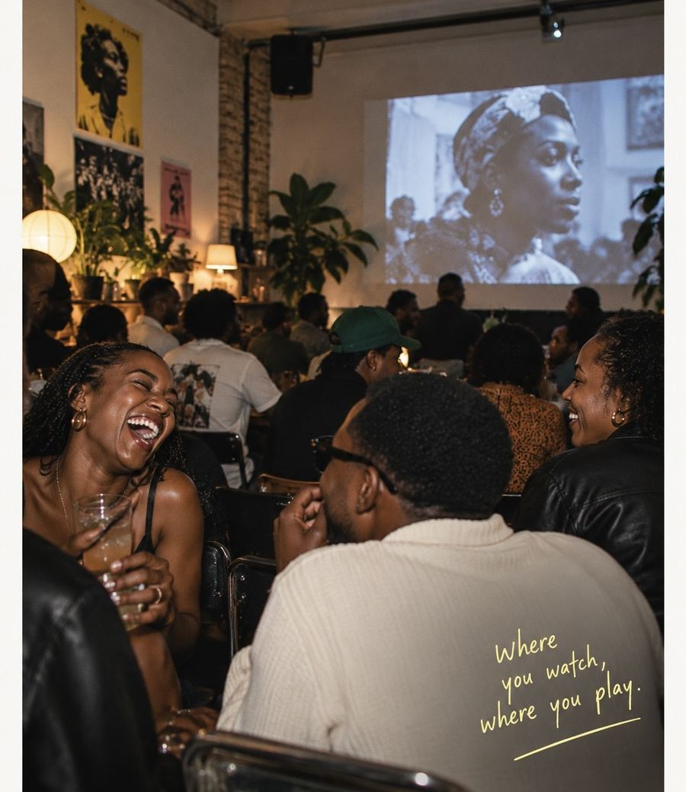
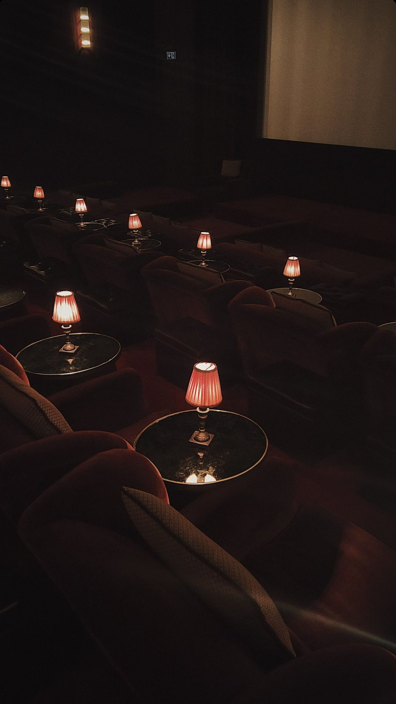

About Playlane
Cinema for the curious neighbour.
Playlane is a social cinema platform where films bring people together. Screenings, called WatchLanes, happen in local spaces close to where people live.
Good films. Great company. Your neighbourhood.

What is a WatchLane?
A screening in a real local space, opened by a Host for the people who live nearby.
- Living rooms
- Cafés
- Restaurants after closing
- Rooftops and gardens
- Community spaces
- Private cinema rooms
Two ways to be part of it.

Come and watch
- Discover WatchLanes in your neighbourhood
- Save a seat and show up
- Watch together, then stay for the conversation

Host a WatchLane
- Pick films from our digital film store
- Open a space and invite your people
- Host for the joy of it, or earn from ticket sales
Why we’re doing this
Films are everywhere. Shared experiences are becoming rarer.
Audiences deserve more than a seat. Independent filmmakers deserve more places for their stories to be experienced together.
Playlane brings films into the places where people already live, and gives neighbours a reason to gather around them.
We’re starting with African cinema.
Creating more places for these films to meet audiences, and more opportunities for people to experience them together, closer to their neighbourhoods.
BE FIRST IN THE LANE.
PlayLane is coming. Join the waitlist to get early access to a new way to discover films, create WatchLanes and bring your people together.